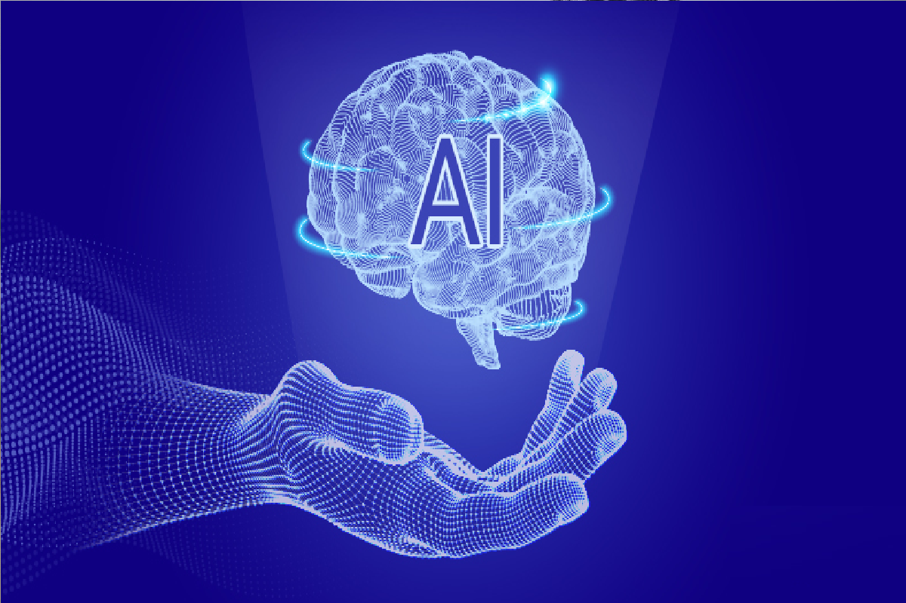

هوش مصنوعی چیست؟ تاریخچه، کاربرد و نحوه درآمدزایی از آن

هوش مصنوعی به زبان ساده
بههرحال، اگر دوست دارید در آغاز تعریفی، هر چند کلی، از هوش مصنوعی، هوشواره یا هوش ماشینی و هوش مصنوعی به زبان انگلیسی artificial intelligence (AI) ، smart mind یا fake mind داشته باشید، احتمالاً این تعریف بتواند تصویری کلی از این حوزه را برایتان بسازد: «هوش مصنوعی شاخهای گسترده از علوم کامپیوتر است که ماشینهای هوشمندی میسازد که از رفتارهای انسانی تقلید میکنند».
در واقع، این ماشینها تصمیماتی میگیرند که معمولاً نیازمند سطحی از تجربهی انسانی است. و به انسانها کمک میکند تا مشکلات احتمالی را پیشبینی کند و بر آنها فائق آید.
نقطهی قوت خاص هوش انسان انطباقپذیری آن است. ما ظرفیت آن را داریم که با وضعیتهای گوناگون محیطمان کنار بیابیم و رفتارمان را از با استفاده از یادگیری تغییر دهیم. تلاش برای دادن این ویژگی به ماشینها منجر به شکلگیری شاخهای به نام یادگیری ماشین در Ai شده است. بهزعم بسیاری از متخصصان، این حوزه مهمترین زیرشاخهی AI است. البته خود یادگیری ماشین هم زیرشاخههایی دارد که مهمترینشان یادگیری عمیق است.
«فیزیکدان و مدیر تحقیقات ریاضیات کاربردی میگوید: هوش مصنوعی این توانایی را دارد که خود را خاموش و اقدام به بازطراحی قدرتمندتری از خود کند. اما در نقطه مقابل تکامل بیولوژیکی انسانها قرار دارد که با سرعت کمی همراه است و نمیتواند با هوش مصنوعی به رقابت بپردازد. اما مردم از این موضوع اطلاع ندارند. در حالی که در کوتاهمدت تأثیر هوش مصنوعی به کنترلی بستگی دارد که روی آن اعمال میشود. در درازمدت تأثیر آن به این موضوع بستگی دارد که آیا اصلاً قابل کنترل خواهد بود یا نه؟»
استیون هاوکینگ | Stephen Hawking
تصویر زیر درک بهتری از توضیحات پاراگراف قبلی بهدست میدهد. یادگیری ماشین و یادگیری عمیق شباهتها و تفاوتهایی با هم دارند. شباهت این دو بخش آنجایی است که هر دو از الگوریتمها استفاده میکنند تا ماشینهایی با کارکردهای ویژه طراحی کنند که نیازی به دخالت عامل انسانی نداشته باشند. اما مهمترین تفاوت یادگیری عمیق و یادگیری ماشین این است که در یادگیری عمیق الگوریتمها لایههای بیشتری دارند و پیچیدهترند.
با بررسی سازوکارهای مغز میتوانیم سر از کار سیستمهای هوشمند دربیاوریم و آنها را در کامپیوتر شبیهسازی کنیم. بنابراین، AI برنامهای است که از هوش انسانی الهام گرفته است و روی ماشینها پیادهسازی میشود. به این ترتیب ماشین میتواند همان کارهایی را که یک انسان انجام میدهد را در زمانی کوتاهتر و با دقتی بیشتر انجام دهد.
برنامهها اغلب روی سیستمهای کامپیوتری پیادهسازی میشوند و بهواسطهی این برنامه، کامپیوتر میتواند درمورد مسائلی که در اختیارش قرار میدهند تصمیم بگیرد، برنامهریزی کند یا نتیجه را پیشبینی کند.
داستان شروع و تاریخچه هوش مصنوعی
ایدهی خلق موجودات هوشمندی که بتوانند کارهای انسان را انجام دهند، به اسطورهها برمیگردد. انسان از وقتی که میتوانسته خیالپردازی کند، همیشه بهدنبال خلق کردن موجوداتی بوده که تحت فرمان او باشند و دستوراتش را اجرا کنند. البته که ساخت چنین موجودی به همین سادگیها نیست و هنوز که هنوز است بشر موفق به ساخت آن نشده و فعلاً در حد همان خیالپردازیهای فیلمهای علمی – تخیلی مانده است.
اولین تلاش انسان برای ساخت ماشینی که بهجای انسان کار کند و تصمیم بگیرد، به حدود قرن ۱۷ بازمیگردد. چند قرن بعد، در دههی ۱۹۳۰ کورت گودل، آلونسو چرچ و آلن تورینگ بنیادهای اساسی منطق و نظریهی علم کامپیوتر را بنا نهادند.
در جنگ جهانی دوم، تصمیمگیری و محاسبات سریع برای شکستن پیامهای رمزی دشمن، بهقدری مهم شد که آلن تورینگ (پدر هوش مصنوعی جهان) ساخت ماشین رمزشکن را آغاز کرد. داستان اختراع ماشینها با قابلیتهای مختلف، دستمایهی ساخت فیلمهای علمی – تخیلی زیادی شده است، همچنین که داستان ساخت اولین ماشین توسط آلن تورینگ، موضوع یکی از همین فیلمهاست.
آلن تورینگ آزمونی برای سنجش هوشمندی ماشینها طراحی کرد که به آزمون تورینگ مشهور است. از نظر تورینگ هر ماشینی که بتواند از پس این آزمون بربیاید هوشمند است.
تاریخچه هوش مصنوعی در ایران
اختراع ماشین تورینگ در خلال جنگ جهانی دوم باعث شد تا سفری بدون انتها آغاز شود. مقصود توسعه روزافزون هوش مصنوعی، تفکر پیوسته بشر پیرامون آن و انباشت هر چه بیشتر دانش و تجربه آدمی در این باره است که «چگونه ماشینها میتوانند همچون آدمی بفهمند و عمل کنند؟». در واقع هسته مرکزی انگیزش تحقیق و توسعه در هوش مصنوعی همین پرسش است. این پرسش نیرویی در درون خود دارد و در دهههای گذشته سبب جنبوجوش عظیمی در دانشمندان و متخصصین علوم اعصاب و مهندسین کامپیوتر گردیده است.
بنابراین از تولد AI، زمان زیادی نمیگذرد. بر همین مبنا این رشته از اوایل دهه ۸۰ شمسی به کشورمان وارد شد. سپس در کشورمان متخصصین بسیاری به کاوشهای نظری درباره آن پرداختند، به نحوی که بر اساس حجم تولیدات علمی که داشتهایم، به رتبه ۱۳ جهان در زمینه نظریهپردازی Artificial Intelligence دست یافتیم. در ایران زندهیاد، دکتر کارو لوکاس که در سال ۱۳۲۸ در اصفهان دیده به جهان گشود، پیشگام معرفی و توسعه رشته هوشمصنوعی و رباتیک در کشورمان بود. ایشان به جهت فعالیتهای بسیار در رشتههای مختلف علوم محض نظیر محاسبات، ریاضیات، احتمالات و علوم مهندسی نظیر رباتیک، موردتوجه محافل علمی جهان واقع شده بود. دکتر لوکاس از سال ۱۳۸۱ برای تدریس رشته رباتیک و AI، پس از سالها فعالیت علمی در غرب، در دانشگاه تهران برنامههای علمی خود را آغازکرد.
اما اگرچه تولیدات علمی و نظری هوش ماشینی در کشورمان گذشته کوتاهی داشته و بهواقع تاریخچه هوش مصنوعی در ایران عمر چندانی ندارد، اما بر اساس تولیدات و مستندات علمی عمیقی که از سوی دانشمندان علاقهمند ایرانی ایجاد شد، بدون تردید میتوان آیندهای درخشان را برای این رشته از علم در ایران متصور بود.
سطوح و انواع هوش مصنوعی
هوش ماشینی محدود یا ضعیف |weak Artificial Intelligence
به سیستمهای هوش مصنوعی اشاره دارد که برای انجام دادن کاری خاص و محدود طراحی شدهاند. این نوع از AI را میتوانیم در برخی از نرمافزاهایی که روزانه استفاده میکنیم ببینیم. مثلاً نرمافزاهای پیشبینی وضعیت آبوهوا یا نرمافزار بازی شطرنج.artificial intelligence ضعیف بر مجموعهدادهای خاص و مشخص متکی است، به همین خاطر نمیتوان از آن برای وظایف دیگری خارج از همان مجموعهداده استفاده کرد.
هوش مصنوعی ضعیف، برخلاف هوش مصنوعی قوی، با اینکه در نگاه اول پیچیده به نظر میرسد، خودآگاه نیست و در شرایطی از پیش تعیینشده عمل میکند.
همهی ماشینهای هوشمندی که امروز ما به نوعی از آنها استفاده میکنیم در همین نوع AI قرار میگیرند Google Assistant ،Google Translate, Siri و دیگر ابزارهای متکی به پردازش زبان طبیعی مثالهایی از AI ضعیفاند. شاید بهزعم بسیاری ابزارهایی که نام بردیم چندان هم «ضعیف» نباشند، اما دلیل «ضعیف» نامیدن این ابزارها این است که راه بسیاری دارند تا از هوشی شبیه به هوش انسانی برخوردار شوند. به عبارت دقیقتر، این ابزارها نمیتوانند بهصورت خودبسنده و مستقل بیندیشند.
بااینحال، هیچیک از چیزهایی که گفتیم به معنای کمارزش بودن فناوری Ai ضعیف نیست. این بخش از AI نمودی است از خلاقیت و هوش ما انسانها.
هوش مصنوعی قوی | Strong Artificial Intelligence
برخلاف هوش مصنوعی ضعیف، این نوع از AI محدود به وظیفهی خاصی نیست و از پس طیف وسیعی از کارها برمیآید. در واقع، هوش مصنوعی قوی به ماشینهایی اشاره دارد که نوعی از هوش انسانی را میتوان در آنها دید. به عبارت دیگر، AI قوی از پس هر کاری که انسانها انجام میدهند برمیآید. نمونههای کامل از این ماشینها را میتوان در فیلمها و رمانهای علمی-تخیلی دید؛ آنجا که رباتها بیهیچ نیازی به انسان کارهای خود را انجام میدهند. این رباتها آگاهی دارند و احساسات را نیز درک میکنند.
فراهوش مصنوعی | Superintelligence
به ماشینهای اشاره دارد که از سطح هوش انسانی گذشتهاند و دیگر محدودیتهای هوش انسانی را ندارند. این گونه از AI، شاید همانی باشد که بسیاری را نگران آیندهی استفاده از این فناوریها کرده است.
برخی از مفاهیم مربوط به حوزههای هوش مصنوعی
اگر بهدنبال کلیدواژههایی برای جستوجوی بیشتر در حوزهی AI میگردید میتوانید از مفاهیم زیر استفاده کنید:
بینایی ماشین | Machine vision
فناوری است که میکوشد نوعی از بینایی را برای ماشین فراهم آورد. بینایی ماشین در فرایندهای گوناگون صنعتی از تشخیص چهره، تحلیل ویدیو، ocr و تشخیص اشیا تا تشخیص الگو استفاده میشود.
از این فناوری در خودروهای خودران نیز استفاده میشود. با اینکه شرکتهای زیادی در تلاشند تا خودروهایی بسازند که نیازی به رانندگی انسانها نداشته باشد، این حوزه بیشتر با نام شرکت تسلا و خودروهای آن گره خورده است.
علیرغم نوپا بودن هوش مصنوعی و بینایی ماشین در ایران، شرکتهای فعال در حوزه بینایی ماشین در ایران تعدادشان امیدوارکننده است و نویدبخش آیندهای روشنتر در این حوزه است.
پردازش گفتار | Speech processing
برای اینکه با مباحث و فناوریهای این حوزه در حد عناوین آشنا شوید بد نیست به چند مورد از فناوریهای مهم این شاخه از AI اشاره کنیم: حوزههای پردازش گفتار مانند سیستم تشخیص گفتار، سنتز گفتار، شناسایی گوینده، چت بات، تحلیل معنایی متون، تحلیل احساسات، جستوجوگر معنایی.
سیستمهای پردازش گفتار در کنار NLP این امکان را برای ماشینهای هوشمندی، چون اسمارتفونها، فراهم میکنند که از طریق زبان گفتاری با کاربران ارتباط برقرار کنند. احتمالاً معروفترین تکنولوژی بازشناسی گفتار که اسمش را شنیدهاید،Siri ، محصول اپل باشد.
Siri میکروفونهایی برای تشخیص صدا دارد و از بازشناسی گفتار خودکار Automatic Speech Recognition برای تبدیل صدا به متن استفاده میکند. البته این دو مراحل ابتدایی هستند که در Siri انجام میشود و تا کامل شدن فرایند چند مرحلهی دیگر در این ابزار طی میشود. مانند بینایی ماشین، شرکتهای فعال در حوزه پردازش گفتار در ایران نیز در حال پا گرفتن هستند و هر روز بر تعدادشان افزوده میشود.
دادهکاوی | Data Mining
همانطور که از نامش نیز مشخص است به حوزهی تحلیل دادهها،بهویژه دادههای کلان، مربوط است. در واقع، در داده کاوی تلاش میشود کار مربوط به استخراج الگو از دادهها را به ماشینها سپرد. با همین توضیح کوتاه هم میشود دانست که دادهکاوی چقدر میتواند مهم باشد، چرا که الگوهای استخراج شده از دادههای کسبوکارها میتواند اطلاعات بسیاری مفیدی برای برنامههای آتی شرکتها فراهم آورد.
این شاخه از AI، ترکیبی از ابزارهایی آماری و هوش مصنوعی با مدیریت مجموعهدادههاست. داده کاوی معمولاً در کسبوکار(بیمه، بانکداری و…)، پژوهشهای علمی(نجوم و پزشکی) و مسائل مربوط به امنیت(تشخیص مجرمان و تروریستها) کاربردهای گستردهای دارد.
البته اهمیت یافتن مجموعهدادهها مسائل و مشکلاتی را نیز پدید آورده است. برای نمونه، حفظ اطلاعات شخصی کاربران در مجموعهدادههای بزرگ بیش از گذشته پر رنگتر شده و چالشهایی برای نگهداری از این دادهها پیش آمده است.
بهخاطر کاربردهای بسیار دادهکاوی و نیازی که در این حوزه احساس میشود بر تعداد شرکتهای داده کاوی در ایران روزبهروز افزوده میشود.
پردازش زبان طبیعی | nlp
پردازش زبان طبیعی آموزش زبان انسانی به ماشینهاست. این بخش از AI جایی است که زبان طبیعی و زبانهای مصنوعی (مانند زبانهای برنامهنویسی) با هم پیوند میخورند. تلاشها برای پردازش زبان با کمک کامپیوترها به نسبت بسیاری از شاخههای هوش مصنوعی عمر طولانیتری دارد.
در پردازش زبان طبیعی نیاز به مجموعهدادههای زبانی داریم تا بتوانیم پردازش را روی آنها انجام دهیم. مفهوم پیکره corpus زادهی همین نیاز است. میتوانید با جستوجوی این مفهوم چند پیکرهی مشهور انگلیسی را ببینید.
اگر کنجکاوید بدانید که چگونه روی این پیکرهها پردازش انجام میشود باید سراغ مفاهیم تخصصیتر بروید. برای مثال در پایتون میتوانید کتابخانهی nltk را فرابخوانید. این کتابخانه امکانات بسیار خوبی برای پردازش زبان طبیعی در اختیارتان میگذارد.
شرکتهای فعال در حوزه پردازش زبان طبیعی در ایران میکوشند ابزارهای پردازش زبان طبیعی را بومیسازی و روی زبان فارسی پیاده کنند.
یادگیری ماشین | Machine Learning
یادگیری ماشین و مفاهیم مربوط به آن، از زیرشاخههای هوش مصنوعی هستند که به توانایی یادگیری ماشینها مربوط میشود؛ درواقع ماشینها قادرند به صورت خودکار به یادگیری و پیشرفت بپردازند بدون اینکه از قبل برای یادگیری آنها برنامهنویسی صورت گرفته باشد. بنابراین ماشینها در مکانهای مختلف قادر به کار با دادهها هستند و میتوانند با دادههای دریافت شده به ارتقای یادگیری خود بپردازند؛ یادگیری ماشین یادگیری اتوماتیک کامپیوترهاست و هدف از آن، این است که کامپیوترها در اثر کار با دادهها به الگوهای جدیدی دست پیدا کنند و تصمیمات بهتری بگیرند. از یادگیری ماشینی اکنون در هر صنعت و شغلی استفاده میشود.
یادگیری تقویتی | Reinforcement Learning
بهبود عملکرد ماشینها با یادگیری تقویتی ممکن میشود؛ یادگیری تقویتی نوعی یادگیری ماشینی است که استفاده از هوش مصنوعی را در برنامههای پیچیده از بازیهای ویدیویی تا روباتیک خود امکانپذیر میسازد. برخی از وظایف رانندگی خودمختار که در آن یادگیری تقویتی میتواند اعمال شود عبارتند از بهینهسازی مسیر، برنامهریزی حرکت، مسیریابی پویا، بهینهسازی کنترلکننده و سیاستهای یادگیری مبتنی بر اطلاع از وضعیت بزرگراهها.
یادگیری بانظارت، بینظارت، نیمهنظارت
یادگیری ماشینی خود به چند دسته یادگیری با نظارت، بینظارت، نیمهنظارت تقسیم شده است. هدف یادگیری بانظارت، میتواند با استفاده از آنچه که در گذشته آموخته و دادههای جدید به نتایج نوینی برسد و مجموعه دادههای آموزشی را آنالیز کند.
یادگیری نیمهنظارت از دادههای برچسب زده شده و برچسب نزده برای آموزش، استفاده میکند؛ این نوع یادگیری میتواند دقت یادگیری را افزایش دهد. یادگیری بینظارت به استفاده از الگوریتمهای هوش مصنوعی برای شناسایی الگوهایی در مجموعههای داده، حاوی نقاط دادهای که نه طبقهبندی شده و نه برچسبگذاری شدهاند، اشاره دارد. بنابراین الگوریتمها اجازه دارند تا نقاط داده موجود در مجموعههای داده را طبقهبندی، برچسبگذاری و یا گروهبندی کنند، بدون اینکه هیچ راهنمایی خارجی در انجام آن کار داشته باشند. به عبارت دیگر، یادگیری بینظارت به سیستم اجازه میدهد تا الگوهای درون مجموعه دادهها را به تنهایی شناسایی کند.
«شبکه عصبی» موجب شناخت الگوهای مغز انسان
شناخت الگوهای مغز انسان با شبکه عصبی ممکن میشود؛ مغز انسان تمامی فرایندهای خودآگاه و ناخودآگاه در بدن انسان را کنترل میکند با این وجود دانشمندان ثابت کردهاند کامپیوترها با سرعتی بسیار بالاتر از مغز میتوانند به فعالیت بپردازند. شبکه عصبی رفتار مغز انسان را منعکس میکنند و به برنامههای رایانهای اجازه میدهند الگوها را تشخیص دهند و مشکلات رایج در زمینههای هوش مصنوعی، یادگیری ماشینی و یادگیری عمیق را حل کنند. شبکههای عصبی که با نامهای شبکه عصبی مصنوعی (ANN) یا شبکه عصبی شبیهسازی شده (SNN) نیز شناخته میشوند، زیرمجموعهای از یادگیری ماشین هستند و در قلب الگوریتمهای یادگیری عمیق قرار دارند. نام و ساختار آنها از مغز انسان الهام گرفته شده است و از روشی که نورونهای بیولوژیکی به یکدیگر سیگنال میدهند، تقلید میکند.
موتور استنتاج سیستم خبره
موتور استنتاج سیستم خبره بخشی از سیستم است که قوانین منطقی را برای استنباط اطلاعات جدید در پایگاه دانش اعمال می کند. اولین موتورهای استنتاج، اجزای سیستم های خبره بودند. سیستم خبره معمولی شامل یک پایگاه دانش و یک موتور استنتاج بود. موتور استنتاج سیستم خبره برای حل مسائل پیچیده و ارائه توانایی تصمیمگیری مانند یک متخصص انسانی طراحی شده است و این کار را با استخراج اطلاعات و قوانین لازم از پایگاه دانش خود با استفاده از قواعد استدلال و استنتاج با توجه به پرسشهای کاربر انجام میدهد.
الگوریتم ژنتیک در خدمت بهینه سازی ساختار نسلها
از الگوریتم ژنتیک در خدمت بهینهسازی ساختار نسلها با اصلاح ژنتیک استفاده میشود؛ الگوریتم ژنتیک یک جستجوی اکتشافی است که از نظریه تکامل طبیعی چارلز داروین الهام گرفته شده است. این الگوریتم فرآیند انتخاب طبیعی را منعکس میکند که در آن بهترین افراد برای تولید مثل انتخاب میشوند تا فرزندان نسل بعدی به وجود بیایند. الگوریتم ژنتیک در خدمت بهینهسازی ساختار نسلها قرار گرفته تا فرایند تکامل طبیعی را شبیهسازی کند. فرایندهایی که بر اساس انجام عملیات روی کروموزومها شکل گرفتهاند.
چهار دسته اصلی سیستم هوش مصنوعی
با چهار گروه اصلی سیستم هوش مصنوعی، مراحل تکامل این فناوری پیموده میشود؛ هوش مصنوعی (AI) به طور کلی به هر رفتاری شبیه انسان که توسط یک ماشین یا سیستم انجام میشود، اشاره دارد. در ابتداییترین شکل هوش مصنوعی، رایانهها به گونهای برنامهریزی شدهاند که با استفاده از دادههای گسترده از نمونه رفتارهای مشابه، رفتار انسان را «تقلید» کنند. این رفتار میتواند از تشخیص تفاوت بین یک گربه و یک پرنده تا انجام فعالیتهای پیچیده در یک مرکز تولیدی، متغیر باشد.
با هوش مصنوعی، ماشینها میتوانند به طور مؤثر کار کنند و حجم وسیعی از دادهها را در یک چشم به هم زدن تجزیه و تحلیل کنند و مشکلات را از طریق یادگیری بانظارت، بینظارت یا نیمهنظارت حل کنند.
۱ـ «ماشینهای واکنشی»، ابتدایی ترین نوع هوش مصنوعی
چهار دسته اصلی سیستم هوش مصنوعی، هر یک بخشی از این فناوری را پیش میبرند؛ ماشین واکنشی، ابتداییترین نوع هوش مصنوعی است که صرفاً به سناریوهای فعلی واکنش نشان میدهد و نمیتواند برای تصمیمگیری در زمان حال به دادههای آموزش داده شده یا تکراری تکیه کند. ماشینهای واکنشی نقشهها و دیگر اشکال برنامهریزی از پیش موجود را به طور کامل حذف میکنند و بر مشاهدات زنده از محیط تمرکز میکنند؛ وظایف خاصی به آنها داده میشود و تواناییهایی فراتر از این وظایف ندارند.
بهعنوان نمونهای از این ماشینها، میتوان از برنامه شطرنجی نام برد که در دهه ۱۹۹۰ در مسابقه با گاری کاسپاروف، قهرمان شطرنج جهان پیروز شد. با این وجود این برنامه نمیتواند حافظه داشته باشد، حرکتهای قبلی خود را به یاد بسپارد و از آنها استفاده کند. ماشینهای واکنشی ابتداییترین نوع هوش مصنوعی محسوب میشوند که برای هدفهای محدودی قابل استفاده هستند و در موقعیتهای مختلف نمیتوانند پاسخگو باشند.
۲ـ «حافظه محدود» با قدرت تصمیمگیری
یکی از چهار دسته اصلی هوش مصنوعی، حافظه محدود است؛ حافظه محدود شامل مدلهای یادگیری ماشینی است که دانش را از اطلاعات، حقایق، دادههای ذخیرهشده یا رویدادهای قبلاً آموختهشده استخراج میکند. بر خلاف ماشینهای واکنشی، حافظه محدود میتواند با تجزیه و تحلیل اقدامات یا دادههای مربوط به آنها با هدف ایجاد دانش آزمایشی، از گذشته یاد بگیرد. این نوع هوش مصنوعی توسط دستیارهای صوتی ـ مجازی، روباتهای گفتگو، ماشینهای خودران و چندین فناوری دیگر استفاده میشود. بهعنوان نمونه برخی از تصمیمگیریهای ماشینهای خودران، قدرت تصمیمگیری در حافظه محدود را نشان میدهند. مثلاً این ماشینها میتوانند خطی را که در آن مشغول رانندگی هستند، عوض کنند؛ البته اطلاعات در حافظه محدود برای همیشه ذخیره نمیشوند و این میتواند ضعف این سیستم محسوب شود.
۳ـ «نظریه ذهن» با توانایی سنجش افکار
نظریه ذهن نیز جزو چهار دسته اصلی هوش مصنوعی، محسوب میشود؛ نظریه ذهن با توانایی سنجش افکار میسر میشود؛ این نظریه شاخهای از علوم شناختی است که به بررسی این موضوع میپردازد که چگونه حالات ذهنی را به افراد دیگر نسبت میدهیم و چگونه از حالات نسبت داده شده، برای توضیح و پیشبینی اعمال آن افراد دیگر استفاده میکنیم. به طور دقیقتر، این شاخهای است که تواناییهای ذهنخوانی را بررسی میکند. هماکنون از این دسته از هوش مصنوعی، برای افکارسنجی در حوزههای سیاسی و اجتماعی بهره گرفته میشود. توانایی سنجش افکار با نظریه ذهن میتواند منجر به شناخت سلایق مخاطب در امور مختلف شود.
۴ـ «هوش مصنوعی خودآگاه» با توانایی شهود و همدلی
هوش مصنوعی خودآگاه با توانایی شهود و همدلی میتواند عالیترین سطحی باشد که سیستم قادر است، به آن برسد؛ برای پیشرفت هوش مصنوعی به سمت کارهای پیچیدهتر که نیاز به شهود و همدلی دارند، باید قابلیتهایی مانند فرااندیشه، خلاقیت و همدلی مشابه خودآگاهی یا آگاهی انسان در آن توسعه داده شود. چنین تغییر پارادایمی تنها از طریق یک تغییر اساسی در وضعیت هوش مصنوعی به سمت آگاهی امکانپذیر است، تغییری مشابه آنچه برای انسانها از طریق فرآیند انتخاب طبیعی و تکامل رخ داده است. هوش مصنوعی خودآگاه میتوانند بفهمد در چه سطحی قرار دهد و احساسات دیگران را نیز با توجه به اطلاعاتی که از آنها به دست میآورد درک میکند و قادر به همدلی خواهد بود.
کاربردهای هوش مصنوعی
با اینکه هوشمصنوعی تازه در ابتدای راه قرار دارد و چند دهه بیشتر نیست که نمودهایش در زندگی روزمره روبهگسترش گذاشته، اما همین حالا هم میتوان در بخشهای مختلف اقتصادی و علمی ردپایش را دید.
تصمیمگیریهای AI بر اساس الگوریتمهایی است که قابلیت درک شرایط را دارند و مانند انسان توان استدلال و حل مسئله دارند. بنابراین هوش مصنوعی میتواند در زمینهی دانشهای متفاوتی مانند فلسفه، زبانشناسی، ریاضی، روانشناسی، عصبشناسی، تئوری کنترل، احتمالات، بهینهسازی و فیزیولوژی استفاده شود و کمک بزرگی به تصمیمگیریهای انسان باشد.
AI با استفاده از الگوریتمها، پردازشهایی روی اطلاعات و دادههای موجود انجام میدهد تا بر اساس نتایج آن تصمیمات لازم برای بهبود کار را بگیرد.
حجم و تنوع زیاد دادههای موجود در کنار هزینهی پایین محاسبات و ذخیرهسازی دادهها باعث شده مدلهایی ساخته شوند تا از روی این دادهها، اطلاعات مفید استخراج شود. سیستمهای سنتی نرمافزاری این قابلیت را ندارند، در عوض هوش مصنوعی همان چیزی است که میتواند با استخراج دادههای مفید از بین دادههای موجود، چراغ روشنی در دل دادههای تاریک باشد.
یکی از پیشرفتهای ویژهای که کسبوکارها میتوانند داشته باشند، استفاده از Artificial Intelligence است که موجب تمایز و بهدنبال آن افزایش کارآمدی و سودآوری آنها میشود. در همین راستا شرکتهای فعال در حوزهی AI، خدماتی ارائه میدهند که باعث بهبود عملکرد کسبوکارها میشود. زمینههای زیادی برای استفاده از هوش ماشینی وجود دارد. بهعنوان مثال AI توان ارائهی خدمات در حوزههای زیر را دارد:
کشاورزی
کشاورزی از قدیمیترین شغلها در جهان امروز است. هزاران سال قبل، ابداع کشاورزی و کشت روشمند محصولات زراعی باعث انقلابی در زیست انسانها شد که به انقلاب کشاورزی معروف است. از زمانی که انسان هوشمند، یکجانشینی را بر کوچ ترجیح دادند و کشاورزی را آغاز کردند تا به امروز کشاورزی تغییرات بسیاری را از سر گذرانده و فناوریهای بسیاری وارد این حوزه شدهاند. آخرین نسخه از فناوریهای جدید که به پشتوانهی هوش مصنوعی ممکن شده است کمکم راهش را به کشاورزی باز میکند.
هوش مصنوعی را بسیاری جدیدترین انقلاب در زندگی بشر میدانند. اکنون، مدتی است که استفاده از هوش مصنوعی در کشاورزی آغاز شده است. روشهای سنتی کشاورزی مشکلاتی دارند که میتوان با کمک AI آنها را رفع کرد. برای مثال، میتوان با استفاده از نرمافزارهای هوش مصنوعی گزارشهایی از وضعیت آبوهوا یا شرایط خاک به دست آورد و بر اساس آن برنامهریزی کرد. کشاورزان اکنون میتوانند با استفاده از AI زمان مناسب کشت و برداشت را تخمین بزنند، میزان آب مناسب برای هر محصول و زمان مناسب آبیاری را بدانند.
پزشکی
یکی از قدیمیترین کاربردهای هوشمصنوعی کاربردهای پزشکی آن است. تلاشهای اولیه برای آوردن هوش مصنوعی به این حوزه شاید اندکی ناامیدکننده بود. نخستین فناوری بر پایهی AI در این حوزه، MYCIN بود که در دههی ۱۹۷۰ در دانشگاه پرینستون برای تشخیص عفونتهایی استفاده شد که از طریق خون منتقل میشوند. این فناوری و فناوریهای مشابه در این دوره، با اینکه بسیار نویدبخش بودند، اما هیچگاه از سطح نمونههای آزمایشگاهی فراتر نرفتند. در واقع هم این سیستمهای اولیه چندان برتری در ابزارهای تشخیصی که خود پزشکان انجام میدادند نداشت.
پس از مدتی کمکم شرایط تغییر کرد. تا جایی که کمتر روزی است که خبری در حوزهی هوش مصنوعی در پزشکی منتشر نشود. البته هنوز بسیار از این فناوریهای جدید مرحلهی آزمایشی خود را میگذرانند. اما شاید برای درک بهتر کاربردهای عملیاتیتر AI در پزشکی بد نباشد اشارهای به یکی از همین کاربردها داشته باشیم: استفاده از هوش مصنوعی برای تشخیص بهترین شیوهی زایمان. در این فناوری، AI با سنجش وضعیت زنان باردار میتواند پیشنهاد دهد که از بین روش طبیعی زایمان و سزارین کدام روش مناسبتر است.
بازارهای مالی و بانکداری
گفتیم که یکی از امکانهایی که هوش مصنوعی در اختیار ما قرار میدهد توان پیشبینی است. امروز دیگر بحث تحلیل بازارهای مالی از طریق هوش مصنوعی صرفاً یک ایده نیست. الگوریتمهایی که برای تحلیل بازار آموزش دیدهاند میتوانند لحظهبهلحظه بازارهای مالی را رصد کنند و با اطلاعاتی که جمعآوری میکنند تصویر واضح و دقیق از وضعیت هر سهم در بازار ارائه دهند. حتی میتوانید معامله کردن را نیز به باتهایی بسپارید که برای این کار طراحی شدهاند.
صنعت بانکداری نیز از قافلهی استفاده از AI جا نمانده است. هوش مصنوعی در بانکداری جای پایاش را باز کرده است. استفاده از چتباتها مدتهاست که در بانکداری رواج یافته است. چتبات امکانی است که از طریق آن کاربر شما میتواند با نرمافزاری که در آن از هوش ماشینی استفاده شده گفتوگو کند. یکی از امکانهای جالبی که این چتباتهای بهظاهر ساده فراهم آوردهاند این است که خدماتدهندگان در هر ساعتی از شبانهروز در دسترس مشتریان خود هستند. همانطور که گفتیم این تنها بخش کوچکی از نقش هوش مصنوعی در بانکداری است.
حوزهی آموزش
بخش آموزش از حوزههایی است که هوشمصنوعی هنوز در آن جای پیشرفتهای بسیاری دارد. مخصوصاً این روزها که همهگیری کرونا دانشآموزان و معلمان را خانهنشین کرده جای خالی فناوریهای آموزشی بر پایهی AI بیش از پیش احساس میشود.
یکی از مهمترین امکانهایی که هوش مصنوعی در آموزش میتواند فراهم آورد شخصیسازی آموزش با توجه به نیازهای منحصربهفرد هر کدام از دانشآموزان است. از نقاط ضعف سیستم آموزشی امروز این است که برای همهی دانشآموزان محتوای درسی یکسانی تدارک میبیند و به تفاوتهای فردی دانشآموزان توجهی ندارد. طبیعی است سرعت یادگیری و علائق دانشآموزان در هر کدام از شاخههای درسی یکسان نباشد. حال تصور کنید سیستمی داشته باشیم که با دادن سابقهی تحصیلی دانشآموز به آن برنامهی درسی مناسب برای دانشآموز را در اختیارتان قرار دهد. در واقع، این یکی از سادهترین کارهایی است که میتوان از ماشینهایی برپایهی هوش مصنوعی (AI) انتظار داشت.
میتوان چند قدم جلوتر رفت. مثلاً میتوان سیستم را طوری طراحی کرد که با توجه به برنامهی شخصی دانشآموز محتوای درسی مناسب او را نیز در اختیارش قرار دهد و ارزشیابی دانشآموز را نیز خودش بر عهده بگیرد. در واقع، ما در اینجا با معلم هوشمندی طرف هستیم که همیشه برای دانشآموز وقت دارد و نیازهای هر دانشآموز را در نظر میگیرد.
بنابراین اگر بخواهیم، با توجه به گفتههای پیشین، دربارهی کاربردهای AI در بخشهای مختلف سختگیرانه صحبت کنیم، باید بگوییم تنها تکنولوژیهایی را میتوان کاملاً در حوزهی هوشمصنوعی قرار داد که خودشان بتوانند بدون دخالت عامل انسانی چیز جدیدی را فرابگیرند.
در این مورد شاید فناوری DeepMind گوگل مثال خوبی باشد. این فناوری را در AI در مقولهی شبکههای عصبی جای میدهند. DeepMind قادر است بدون تکیه بر الگوریتمهای رفتاری از پیش تعریف شده تصمیمگیری کند. بهخاطر کم بودن تکنولوژیهایی مثل این محصول گوگل، میتوان گفت که هوشمصنوعی هنوز کودکی نوپاست که راه بسیاری در پیش دارد. برخی از متخصصان تکنولوژیهای امروزیِ بر پایهی هوش مصنوعی را فناوریهای شبههوش مصنوعی(pseudo AI) مینامند تا بر نوپا بودن آن تاکید کنند.
حملونقل
از نخستین انگیزهایی که هوش مصنوعی را وارد عرصهی حملونقل کرد مشکلات بیشمار این حوزه بود. یکی از مشکلات اساسی این حوزه آسیبهای جانی و مالی فراوانی است که هر ساله به بسیاری وارد میشود.
کافی است به آمار تلفات جادهای در همین کشور خودمان نگاهی بیندازید تا میزان حاد بودن این مشکل پی ببرید. ماشینهای هوشمند که توان تحلیل قدرتمندی دارند میتوانند در حل این مشکل به کمک انسان بیایند.
مثال دیگری از مشکلات این حوزه مسئلهی ترافیک است. وورد AI به مدیریت ترافیک میتواند همان حلقهی گمشدهی این معضل باشد. چرا که سیستمهای هوش مصنوعی بهسرعت میتوانند خود را با وضعیتهای جدید سازگار کنند و عملکرد خود را بهبود ببخشند.
صنعت سرگرمی و سینما
یکی از فناوریهای متکی به AI که تقریباً هر روز از آن استفاده میکنیم و برایمان عادی شده است، سیستمهای پیشنهاددهنده است. زمانی که در یوتیوب ویدئویی نگاه میکنید، گوگل ویدئوهایی دیگری را نیز به شما پیشنهاد میدهد که شاید موردپسندتان باشد. همین فناوری بهظاهر ساده میتواند با توصیههایش کسانی را که بهصورت اتفاقی وارد سایتتان شدهاند در سایت نگه دارد.
از ابزارهای مفید دیگری که AI میتواند برای این بخش فراهم آورد،خلاصهسازی اخبار و گزارشها برای انتشار است. خلاصهسازی بیش از همه بحثی است که در پردازش زبان طبیعی بررسی میشود.
محیطزیست و انرژی
سادهترین کاربرد هوش مصنوعی در این حوزه میتواند استفاده از AI در مدیریت نیروگاهها و پالایشگاهها باشد. با استفاده از هوش مصنوعی میتوان الگوهایی برای مدیریت این مراکز داشت که خطای بسیاری کمتری داشته باشند.
یکی از جالبترین کاربردهای هوش مصنوعی در حوزهی محیطزیست، استفاده از آن برای محافظت از گونههای در خطر انقراض است. در یکی از این موارد، از فناوری تشخیص چهره برای حفظ گونهای از میمونها استفاده شده است. ردگیری گونههای در خطر انقراض با ابزارهای فیزیکی دشوار و هزینهبر است.
نرم افزارهای هوش مصنوعی تصویر گونهها را با اطلاعات منحصربهفرد هر مورد ذخیره میکنند. هر تصویر جدیدی که وارد این نرمافزار میشود، بهصورت هوشمند تحلیل میشود و شما میتوانید بدانید آیا این مورد قبل از این در جای دیگری دیده شده است و مشخصات منحصربهفردش چیست.
جدیدترین نمونههای هوش مصنوعی در جهان که صنایع را متحول کردهاند
هوش مصنوعی (AI) با کاربردهای باورنکردنی خود در سراسر جهان موجی از تغییرات اساسی ایجاد کرده و آخرین نمونههای این فناوری نیز از این قاعده مستثنی نیستند. از چتباتها گرفته تا ابزارهای خلاقانه دیگر، هوش مصنوعی نحوه تعامل ما با فناوری را تغییر داده است. بیایید نگاهی بیندازیم به برخی از آخرین و جدیدترین نمونههای هوش مصنوعی در جهان که تا مدتها تیتر یک اخبار را به خود اختصاص داده بودند:
ChatGPT، از جدیدترین نمونههای هوش مصنوعی مکالمهای که جهان را مبهوت خود ساخته
ChatGPT یک سیستم هوش مصنوعی مکالمهای پیشرفته است که از الگوریتم یادگیری عمیق برای درک و ایجاد پاسخهای زبانی انسان مانند استفاده میکند. این مدل زبانی از خانواده GPT (Generative Pre-trained Transformer) است و آخرین نسخه آن، GPT-3.5، بهمنظور درک و پاسخگویی به طیف گستردهای از موضوعات، بر روی حجم عظیمی از دادهها آموزش دیده است. این موضوع ChatGPT را به یکی از پیشرفتهترین مدلهای زبانی در سراسر جهان تبدیل کرده. این چتبات را میتوان برای طیف گستردهای از برنامهها، از جمله خدمات مشتریان، ترجمه زبان و حتی نوشتن خلاق استفاده کرد.
دال ای، بهترین مبدل برای ایجاد تصاویر خیرهکننده و بینظیر
دال ای DALL-E یک تولیدکننده تصویر مبتنی بر هوش مصنوعی است که توسط OpenAI همان شرکت سازنده ChatGPT توسعه یافته. این مبدل میتواند تصاویر واقعی را براساس توضیحات متنی ایجاد نماید، به این معنی که شما یک شیء یا صحنه را توصیف میکنید و دال ای یک تصویر واقعی از آن برایتان ایجاد مینماید. تصاویر تولید شده توسط دال ای واقعا باورنکردنی هستند و پتانسیل هوش مصنوعی را در زمینه هنرهای خلاق به نمایش میگذارند. این برنامه یکی از جدیدترین نمونههای هوش مصنوعی در جهان است که کاربردهای بیشماری در صنایعی مانند طراحی محصول و تبلیغات دارد.
لامدا، نسل بعدی ابزارهای هوش مصنوعی برای توسعهدهندگان
لامدا LaMDA یک پلتفرم محاسباتی قدرتمند است که توسط خدمات وب آمازون (AWS) توسعه یافته و طیف وسیعی از ابزارهای یادگیری ماشین و هوش مصنوعی را ارائه میدهد. این محصول طراحی شده تا ساخت و استقرار برنامههای هوش مصنوعی را برای توسعهدهندگان آسانتر سازد و توسط تعدادی از شرکتها برای ایجاد راهحلهای پیشرفته هوش مصنوعی استفاده گردیده است.
بارد، زمینهساز انقلابی در زمینه نویسندگی خلاق
بارد Bard
یک مدل زبان هوش مصنوعی است که توسط گوگل توسعه یافته و میتواند شعر و نثر را با کیفیت بالا در سبکها و قالبهای مختلف تولید نماید. این مجموعه بر روی پایگاه دادهای عظیمی از ادبیات آموزش دیده که آن را قادر میسازد تا نوشتاری در سبکها و ژانرهای مختلف ایجاد نماید. بارد توسط شاعران و نویسندگان سراسر جهان برای خلق آثار جدید استفاده شده و به دلیل توانایی آن در تقلید از سبک و لحن نویسندگان مورد تحسین قرار گرفته و این پتانسیل را دارد که انقلابی در زمینه نویسندگی خلاق ایجاد نماید.
اینها تنها تعدادی از آخرین و جدیدترین نمونههای هوش مصنوعی در جهان هستند که زندگی ما را متحول ساختهاند. از مدلهای زبانی گرفته تا ابزارهای خلاقانه دیگر، هوش مصنوعی طرز فکر ما را درباره فناوری و پتانسیل آن تغییر داده است.
کاوش در کاربردهای تخصصی هوش مصنوعی
هوش مصنوعی (AI) در حال تغییر نحوه عملکرد صنایع و مشاغل است و فناوریهای مبتنی بر هوش مصنوعی درها را به روی دنیایی از امکانات باز میکنند. در میان بسیاری از کاربردهای تخصصی هوش مصنوعی، قابلیتهای تشخیص چهره، تشخیص اشیا و سایر عملکردهای تخصصی این فناوری توجه روزافزونی را به خود جلب کردهاند. این عملکردهای هوش مصنوعی راه خود را به صنایع مختلف، از مراقبتهای بهداشتی گرفته تا خردهفروشی باز کرده و نحوه انجام کارها را تغییر دادهاند.
فناوری تشخیص چهره، از مهیجترین کاربردهای هوش مصنوعی برای متحول کردن زندگی ما
یکی از برجستهترین و مهیجترین کاربردهای هوش مصنوعی، تشخیص چهره است. تشخیص چهره یک فناوری قدرتمند است که به ماشینها اجازه میدهد تا چهرههای انسانی را تجزیهوتحلیل و شناسایی کرده و این امر اهمیت فزایندهای برای اهداف امنیتی و احراز هویت دارد. این کاربرد هوش مصنوعی میتواند در موارد بسیاری از اجرای قانون گرفته تا باز کردن قفل دستگاههای شخصی مورد استفاده قرار گیرد.
علاوهبراین، تشخیص چهره برای تحقیقات بازاریابی نیز استفاده میشود. فروشگاههای خردهفروشی میتوانند از تشخیص چهره برای ردیابی اطلاعات جمعیتی مشتریان خود مانند سن، جنسیت و حتی خلق و خوی آنها استفاده کنند. سپس میتوانند از این اطلاعات به دست آمده برای تنظیم کمپینهای بازاریابی و کمک به فروشگاهها در بهینهسازی مکانهای محصول و چیدمان فروشگاه استفاده نمایند.
تشخیص اشیا، از تاثیرگذارترین کاربردهای هوش مصنوعی در خرده فروشیها
یکی دیگر از کاربردهای تخصصی هوش مصنوعی که درحال کسب محبوبیت روز افزونفزونافزو است، فناوری تشخیص اشیا است. تشخیص شیء توانایی یک ماشین برای شناسایی یک شی خاص در یک تصویر یا ویدئو است. این فناوری کاربردهای متعددی دارد و از خودروهای خودران گرفته تا اتوماسیون خانگی میتوان از آن بهره برد. در خردهفروشی، تشخیص اشیا میتواند برای شناسایی و ردیابی اقلام موجود در قفسههای فروشگاه استفاده شود و کسبوکارها را قادر میسازد تا سطح موجودی محصول خود را بهتر مدیریت کنند.
در مراقبتهای بهداشتی، از قابلیتهای تشخیص اشیاء مبتنی بر هوش مصنوعی برای تشخیص بیماریها و ناهنجاریها استفاده میشود. محققان درحال توسعه ابزارهای جدید هوش مصنوعی هستند که میتوانند شرایط پزشکی مختلف را براساس تصاویر پزشکی مانند اشعه ایکس و اسکن MRI شناسایی و طبقهبندی کنند. این به پزشکان کمک میکند تا تشخیصهای سریعتر و دقیقتری داشته باشند و درمان بهتری را به بیماران خود ارائه دهند.
تشخیص گفتار و پردازش زبان طبیعی، از ضروریترین کاربردهای هوش مصنوعی در جهان امروز
سایر عملکردهای تخصصی هوش مصنوعی شامل تشخیص گفتار و پردازش زبان طبیعی است. این برنامهها نحوه تعامل مردم با فناوری را از دستیارهای صوتی گرفته تا چتباتها تغییر میدهند. در آینده، انتظار میرود که هوش مصنوعی حتی تخصصیتر شود و برنامههای کاربردی جدید و نوآورانه همواره در حال توسعه باشند.
با وجود کاربردهای فراوان هوش مصنوعی، هنوز نگرانیهایی در مورد سوء استفاده احتمالی از این فناوری وجود دارد. برخی میترسند که تشخیص چهره و سایر کاربردهای تخصصی هوش مصنوعی منجر به نقض حریم خصوصی و آزادیهای مدنی افراد گردد. بنابراین، بسیار مهم است که توسعه و استفاده از هوش مصنوعی به دقت تنظیم و نظارت شود، تا از استفاده اخلاقی و مسئولانه آن اطمینان حاصل گردد.
در نتیجه میتوان اینگونه گفت که، کاربردهای هوش مصنوعی بسیار گسترده و متنوع است و میتواند با عملکردهای تخصصی مانند تشخیص چهره، تشخیص اشیا و پردازش زبان طبیعی، صنایع و مشاغل را متحول نماید.
اپیدمی از دست دادن شغل با هوش مصنوعی تا سال ۲۰۳۰
هوش مصنوعی بهسرعت درحال دگرگونی صنایع در سراسر جهان است. درحالیکه این فناوری مزایا و فرصتهای زیادی برای رشد دراختیار کسبوکارها قرار میدهد، اما بسیاری آن را تهدیدی قابلتوجه برای اشتغال میدانند. برخلاف تصور این عده که ظهور فناوریهای هوش مصنوعی و اتوماسیون را علت اصلی از دست رفتن مشاغل در بخشهای مختلف از جمله تولید، خدمات مشتری، حملونقل و حتی مشاغل یقهسفید مانند حسابداری و حقوق عنوان میکنند، اما درواقع این تکنولوژی آمده تا فرایندهای کاری را سادهسازی کرده و کارایی را در صنایع مختلف افزایش دهد.
همانطور که سیستمهای هوش مصنوعی پیشرفتهتر میشوند، قادر به انجام وظایفی هستند که زمانی تنها مسئولیت انسانها بوده. اما این به معنای حذف نیروی انسانی از فرایندهای کاری نیست، بلکه هدف برداشتن سختی کار از دوش این نیروها و قرارگیری انسان و فناوری در کنار هم است. بهعنوانمثال، چتباتها و دستیاران مجازی میتوانند درخواستهای مشتری و پشتیبانی را انجام دهند، درحالیکه رباتها میتوانند محصولات را مونتاژ و تولید کنند. با وجود این توضیح، ادغام فناوری در مشاغل باز هم منجر به ایجاد نگرانیهایی در مورد امنیت شغلی و تأثیر آن بر جامعه گردیده و این هجمه را ایجاد کرده که در سالهای پیش رو از دست دادن شغل با هوش مصنوعی، تهدیدی جدی برای میلیونها نیروی کار فعال در سراسر جهان خواهد بود.
از دست دادن شغل با هوش مصنوعی، تهدیدی برای میلیونها نیروی کار در سراسر جهان
براساس مطالعهای که توسط موسسه جهانی مک کینزی انجام شده، اتوماسیون میتواند تا سال ۲۰۳۰ جایگزین ۳۷۵ میلیون شغل در سراسر جهان شود. تنها در ایالاتمتحده، تخمین زده میشود که حدود ۴۷٪ از تمامی مشاغل در معرض خطر خودکار شدن قرار گیرند. البته مشاغل جدیدی جایگزینی مشاغل از دست رفته بهدلیل اتوماسیون خواهند شد، اما مقیاس و سرعت جابهجایی شغل میتواند قابلتوجه باشد.
تأثیر هوش مصنوعی بر اشتغال درحالحاضر در چندین بخش مشهود است. بهعنوانمثال، استفاده از وس
ایلنقلیه خودران میتواند منجر به از دست دادن میلیونها شغل در صنعت حملونقل و ایجاد مشاغل جدید گردد. ماشینهای خودکار و رباتها نیز جایگزین کارگران انسانی در کارخانههای تولیدی میشوند که این امر منجر به از دست دادن شغل با هوش مصنوعی و جایگزینی مشاغل جدید در این بخش میگردد.
صنعت خردهفروشی نیز تحتتأثیر هوش مصنوعی قرار گرفته است، زیرا افزایش خرید آنلاین و سیستمهای پرداخت خودکار نیاز به نیروی انسانی را کاهش داده است. در بخش مالی، سیستمهای مبتنی بر هوش مصنوعی در حال جایگزینی مشاغل در زمینههایی مانند حسابداری و تحلیل مالی هستند.
در واقع هوش مصنوعی جایگاه شغلی افراد را اشغال نمیکند، بلکه متخصصانی که از این فناوری در فرایند کاری خود استفاده میکنند، جایگزین نیروهای غیرمتخصص خواهند شد.
از تهدیدها تا فرصتها: هوش مصنوعی چگونه میتواند باعث ایجاد شغل و رونق اقتصادی گردد؟
درحالیکه تأثیر هوش مصنوعی بر اشتغال قابلتوجه است، اما نمیتوان تمامی این تاثیر را منفی دانست. هوش مصنوعی همچنین فرصتهای شغلی جدیدی ایجاد کرده است، بهویژه در زمینههای مرتبط با توسعه و نگهداری سیستمهای مرتبط با این فناوری. بهعنوانمثال، بهواسطه این تکنولوژی تقاضای فزایندهای برای دانشمندان داده، مهندسان یادگیری ماشین و متخصصان اخلاق هوش مصنوعی به وجود آمده است. با این حال، نمیتوان این امر را هم نادیده گرفت که این مشاغل به مهارتها و آموزشهای تخصصی نیاز دارند و براین اساس نیروهای کار باید برای ارتقا توانمندیهای خود در دنیای جدید که فناوری حرف اول در آن را میزند تلاش داشته باشند.
دولتها و کسبوکارها باید اقداماتی را برای رسیدگی به تاثیر هوش مصنوعی بر اشتغال انجام دهند. این میتواند شامل سرمایهگذاری در برنامههای آموزشی بهمنظور کمک به کارگران، برای کسب مهارتهای موردنیاز در مشاغلی با موضوع هوش مصنوعی باشد. همچنین میتواند شامل بررسی مدلهای اقتصادی جدید، برای حمایت از کسانی باشد که به دلیل اتوماسیون از کار بیکار شدهاند.
درنتیجه، درحالیکه هوش مصنوعی مزایای متعددی را برای جامعه به ارمغان میآورد، همچنین میتواند تهدیدی قابلتوجه برای مشاغل نیز به شمار رود. دولتها و کسبوکارها باید با یکدیگر همکاری کنند تا به معظل از دست دادن شغل با هوش مصنوعی رسیدگی نموده و آیندهای را ایجاد کنند که در آن انسانها و ماشینها بتوانند در کنار هم زندگی نمایند.
نمونههایی از هوش مصنوعی در ایران
هوش مصنوعی از جمله فناوریهایی است که تا به امروز توانسته به نحو بسیار منعطفی با صنایع بسیاری ادغام شود. به همین دلیل با مروری ساده در کشورمان میتوانیم نمونههای بیشماری از کاربست موفق هوش مصنوعی در صنایع گوناگون را پیدا کنیم. گفتنی است که در تمام این امور، هوشمصنوعی میکوشد تا روندهای زندگی و امور تمدن انسانی را هوشمندسازی کند. به طور مثال از روندهای موجود در صنایع گرفته تا فعالیتهای تجاری کسبوکارها و حتی پلتفرمهای ارتباطجمعی. در ادامه میکوشیم بخشی از این موارد انجام شده در زمینه ادغام هوش مصنوعی با امور زندگی را بررسی کنیم.
بوروکراسی کشور: مکانیزمهای احراز هویت فراتر از عناصر بیومتریک
یکی از زمینههای پرکاربرد هوش مصنوعی در کشورمان، مربوط به توسعه مکانیزمهای احراز هویت است. تا پیش از کاربست هوش مصنوعی در مکانیزمهای احراز هویت، فرایندهای شناسایی کاربران فضای مجازی آنچنان که باید هوشمندسازی نبود. این فرایندها گاه از عناصری مانند دریافت شماره تماس افراد و احراز مالکیت استفاده میکنند و گاه با دریافت کد ملی کاربر هویت آنها را تشخیص میدهند. در مرتبه پیشرفتهتر از مشخصههای بیومتریک مانند حالت چهره برای تشخیص هویت افراد استفاده میشد.
اما در کشورمان برخی از روندهای اداری نظیر، روندهای قوه قضاییه و یا ثبتنام و مشارکت افراد در بازار سرمایه، نیاز به احراز دقیق هویت دارد و با مکانیزمهای فوقالذکر نمیتوان هویت افراد را آنطور که باید احراز کرد. در این شرایط بود که با استفاده از فناوری پردازش تصویر، الگوریتمهای پیشرفتهای فراهم شد تا از مراجعه خیل عظیمی از مردم به بازار سرمایه و دفاتر امور قضایی جلوگیری شود. از طرفی حجم قابلتوجهی از کاغذ در این روندهای اداری کاسته شد. زمان رسیدگیها کاهش یافت و به همان میزان دقت انجام احراز هویت افراد نیز افزایش پیدا کرد. این رخداد، بهنوعی تحولی زیرساختی در عرصه بوروکراسی بهحساب میآید که به لطف محصول فراشناسا پدید آمد. این محصول بهمثابه یک رابط کاربری منعطف بر روی سامانههای متنوعی نصب گردیده و احراز دقیق هویت را به کمک هوشمصنوعی پیادهسازی میکند.
صنایع غذایی کشور: کشف آلودگیهای عمیق در ظروف غذایی
از دیگر موارد موفق کاربست هوش مصنوعی در صنایع غذایی کشور است. دراینرابطه باید گفت شرکتهای دانشبنیان بسیاری در کشورمان وجود دارند که در طول سال همواره بر تعداد آنها نیز افزوده میشود. این شرکتها همواره در تلاش برای هوشمندسازی روندهای زندگی هستند. یکی از موفقیتهای چشمگیر آنها طراحی سامانهای است که میتواند آلودگیهای موجود در عمق ظروف را تشخیص دهد. این روند میتواند ظروف ناپاک را از چرخه تولید خارج کرده و بر کیفیت عملیاتهای تولید در این صنعت بیفزاید. این دست از امور حتی به کمک نیروی انسانی، چه با چشم مسلح و چه با چشم غیرمسلح قابلشناسایی نبود. به همین دلیل این تکنولوژی میتواند علاوه بر تولید ارزش افزوده، چالشهای بسیاری را در این صنعت شناسایی و رفع کند.
علوم پزشکی: اختراع رباتهای جراح
متخصصین کشورمان توانستهاند با استفاده از فناوریهای هوش مصنوعی، رباتهای جراح اختراع کنند و حتی تعدادی از این محصولات را نیز به کشورهای جنوب شرقی آسیا نظیر مالزی صادر نمایند. دارندگان این فناوری در جهان بسیار محدود هستند. با استفاده از این فناوری، پزشک متخصص میتواند به دورترین نقاط کشور و جهان، خدمات خود را صادر کند و بهصورت آنلاین و از طریق ربات، جراحی انجام دهد.
کسبوکارهای جدید: ظهور چتباتها و توصیهگرهای هوشمند
فزونی کاربران فضای مجازی و راحتی دسترسی برای خرید و استفاده از خدمات آنلاین، تقریباً تمامی مردم جهان را بهسوی پلتفرمهای فروشگاه و شرکتهای آنلاین کشانده است. در این وضعیت، نیروی انسانی نمیتواند پاسخگوی نیازهای آنلاین کاربران و مدیریت سؤالات و درخواستهای ایشان باشد. به همین دلیل چتباتها در پاسخ به این نیاز ظهور کردند. چتباتها با بهرهگیری از فناوری یادگیری ماشین میتوانند همزمان بهترین پاسخ به سؤالات مشتریان را ارائه کرده و علاوه بر تقویت ترافیک وبسایت، رضایت مشتری را نیز بهبود ببخشند. در همین رابطه توصیهگرها بهعنوان رابط کاربریهای هوشمند، امروزه توانستهاند با قرارگیری بر روی پلتفرمهای مختلف فروشگاهی، خدماتی و خبری، علایق کاربر را بر اساس الگوی رفتاری وی شناسایی کرده و نزدیکترین مطالب به نیاز و سلیقه کاربر را به او پیشنهاد دهند. این دو فناوری امروزه در پلتفرمهای متعددی در کشور رشدیافته و توانسته است تجربههای کاربری را به نحوی چشمگیری ارتقاء دهد.
بازاریابی: استفاده از فناوری دادهکاوی برای شناسایی پرسوناژهای جامعه هدف
با توسعه هوش مصنوعی در کشور، علم بازاریابی بهخوبی توانسته است از فناوریهای این رشته از دانش استفاده کند. به این نحو که هر استراتژی بازاریابی نیاز به شناخت هویت جامعه هدف دارد تا بتواند محتواهایش را متناسب با سلایق ایشان تنظیم کند. در این راستا فناوری دادهکاوی میتواند با شناسایی الگوهای رفتاری کاربران در پلتفرمهای فروشگاهی و اجتماعی، منطق بازاریابی را متناسب با الگوهای رفتاری جامعه هدف تنظیم کند.
اما دادهکاوی محدود این به بازاریابی نیست. به بیان دیگر علوم مختلف دیگری نظیر جامعهشناسی از این فناوری برای شناخت رفتارهای اجتماعی و ایدهها یا دغدغههای شهروندان فعال در بستر فضای مجازی استفاده میکنند که نوبه خود برای سیاستگذاری در سطوح کلان کشوری بسیار کارآمد است.
صنعت نگارش: اختراع فناوریهای تبدیل صوت به متن و متن به صوت
از اینکه هوش مصنوعی بتواند ارتعاشات گفتار انسانی را بفهمد و آن را به متن تبدیل کند و یا متنهای الکترونیکی را با لحنهای متنوع و گفتار روان انسانی بخواند، میتوان نوید آیندهای درخشان و تحولات خیرهکنندهای را در دهههای آینده داد. زیرا فناوریهای یاد شده بهمثابه رابط کاسینربریهای قدرتمند، میتوانند با پلتفرمهای گوناگون ادغام شوند و همچون قوه تشخیص گفتار انسانی و یا قوه نطق عمل کنند. به بیان دیگر، به لطف این فناوریها میتوان در آینده نهچندان دور شاهد رباتهای سخنگو و یا وبسایتهایی باشیم که با استفاده از گفتار، کاربران را راهنمایی میکنند. این موضوع تحولی عظیم در تجربه کاربران از فضای مجازی خواهد بود.
آشنایی با رباتهای مطرح هوش مصنوعی در جهان
هوش مصنوعی در چند سال گذشته با سرعتی باورنکردنی درحال پیشرفت بوده و اخبار مرتبط با رباتهایی که از این فناوری استفاده میکنند در زندگی روزمره ما بسیار به گوش میرسد. در اینجا چند نمونه از رباتهای مطرح هوش مصنوعی در جهان آورده شده است:
سوفیا، رباتی با هوش هیجانی که در جهان طوفان به پا کرده
سوفیا یک ربات انسان نمای اجتماعی است که توسط شرکت Hanson Robotics در هنگ کنگ ساخته شده. این ربات قادر به پردازش دادههای بصری، تشخیص چهره و همچنین گفتگو با انسان است و از هوش مصنوعی برای درک و پاسخ به احساسات و سوالات انسانی استفاده میکند. سوفیا در محافل عمومی متعددی حضور داشته و حتی تابعیت عربستان سعودی را نیز دریافت کرده است. این ربات در مصاحبه با رسانههای خبری مانند CNN و بی بی سی به نمایش گذاشته شده است.
پیپر، بهترین دوست انسان با توانایی خاص در برقراری تعامل طبیعی
پیپر یک ربات انسان نما است که برای تعامل با انسان به روشی طبیعی طراحی گردیده است. این ربات که توسط Softbank Robotics ساخته شده در اصل برای کار در محیطهای خردهفروشی طراحی گردیده و قادر به تشخیص احساسات، درک گفتار و پاسخ مناسب به آنها است. این ربات در محیطهای مختلفی از هتلها گرفته تا بیمارستانها استفاده گردیده است.
اسپات، ربات چهارپای همه کاره که تحولی در کاربردهای صنعتی و تجاری ایجاد کرده
اسپات یک ربات چهار پا است که بهعنوان یکی از رباتهای مطرح هوش مصنوعی در جهان شناخته شده و برای کاربردهای صنعتی و تجاری توسط تیم Boston Dynamics طراحی گردیده است. اسپات که مجهز به سنسورها، دوربینها و فناوریهای پیشرفته است، میتواند در سطوح مختلف و محیطهای پیچیده حرکت کند و طیف وسیعی از وظایف مانند بازرسی سایتهای ساختوساز یا عملیات جستجو و نجات را انجام دهد.
سگ ربات سونی؛ آیبو گامی به سوی حیوانات خانگی رباتیک
آیبو یک سگ رباتیک است که توسط شرکت سونی ساخته شده. آیبو که به فناوری هوش مصنوعی مجهز گردیده، میتواند یاد بگیرد و خود را با محیط اطراف سازگار سازد و همچنین صدا و حرکات صاحبان خود را تشخیص داده و به آنها پاسخ دهد. آیبو به خاطر حرکات واقعگرایانه و ویژگیهای بیانیاش مورد توجه بسیاری قرار گرفته است.
باکستر، ربات پیشرفتهای که پابهپای انسان کار میکند
باکستر رباتی است که توسط Rethink Robotics ساخته شده است. باکستر که برای کار در کنار انسان در حوزه تولید و سایر صنایع طراحی شده، قادر به انجام وظایف مختلفی از کار در خط مونتاژ گرفته تا بستهبندی و حملونقل است. این ربات بهدلیل رابط کاربرپسند و انعطافپذیری خود شناختهشده است.
آسترو، یک ربات پیشرفته همراه برای جهشی عظیم به دنیای فردا
آسترو که توسط سونی توسعه یافته، یک ربات همراه است که برای کمک به بهبود کیفیت زندگی انسانها طراحی گردیده است. با کمک فناوریهای پیشرفته هوش مصنوعی، آسترو میتواند احساسات انسانها را تشخیص داده و به آن پاسخ دهد. این ربات همچنین میتواند از محیط خود بیآموزد و حتی با دستگاههای دیگر ارتباط برقرار کند.
اینها تنها چند نمونه از رباتهای مطرح هوش مصنوعی در جهان هستند که هرکدام قابلیتها و کاربردهای منحصر به فرد خود را دارند. همانطور که فناوری هوش مصنوعی به تکامل خود ادامه میدهد، میتوان انتظار داشت که در سالهای آینده شاهد رباتهای پیشرفتهتر و پیچیدهتری نیز باشیم.
تواناییها و قابلیتهای هوش مصنوعی
با مروری که درباره کاربردهای هوش مصنوعی در کشورمان داشتیم، دشوار نیست که حدس بزنیم آینده شگفتانگیزی در انتظار صنایع گوناگون است. همچنان که هر روز شاهد اخباری جدید و جالب درباره چگونگی کاربرد هوش مصنوعی در زندگی هستیم، در آینده نزدیک همه چیز بیش از امروز و آنچه که هست به هوش مصنوعی گره میخورد. این یعنی روندهای بیشتری از زندگیمان به کمک هوش مصنوعی، هوشمندسازی خواهد شد. در ادامه برخی از قابلیتهای هوش مصنوعی که در آینده به منصه ظهور میرسند را مرور میکنیم.
توسعه اتومبیلهای خودران
پیشرانه توسعه تکنولوژی جهان در زمینه خودروهای خودران، شرکت تسلا است. این شرکت اخیراً اعلام کرده است که میخواهد به طور کامل با از فناوری راداری مستقل شده و از قویترین پردازشگرهای هوش مصنوعی در شاخه بینایی ماشین برای حالت Autopilot خودروی تسلا استفاده کند. این قابلیت یکی از منحصربهفردترین توانمندیهای هوش مصنوعی در حال حاضر جهان بهحساب میآید.
تحول در متدهای برنامهنویسی
در حال حاضر ایدهها و طرحهایی از سوی متخصصین هوش مصنوعی ارائه میشود مبنی بر اینکه روندهای برنامهنویسی به کمک هوش مصنوعی و با حذف نیروی انسانی انجام شود. در حال حاضر نیز، برنامهنویسان و طراحان وبسایتها میکوشند تا Sketch ها را به کمک Artificial Intelligence به کدهای Html تبدیل کنند که این خود نشان از آغاز هوشمندسازی روندهای برنامهنویسی در آینده نزدیک دارد.
آهنگسازی، شعرسرایی و نمایشنامهنویسی
اخیراً دانشمندان دانشگاه MIT آمریکا به همراه بتهوون شناسان مشهور، توانستهاند به کمک هوش مصنوعی فقرات مفقود شده سمفونیهای این آهنگساز مشهور آلمانی را ترمیم کنند. این کار از طریق یادگیری شیوه آهنگسازی توسط هوش مصنوعی و بازخوانی سمفونیهای دیگر بتهوون صورتگرفته است. بسیار خب، میتوان دریافت که در آینده میتوانیم شاهد نگارش نمایشنامههایی قویتر از شکسپیر، آهنگهایی عمیقتر از موتسارت، انگارههای فلسفی ژرفتر از هگل باشیم که هرکدام در جای خود زلزلهای فکری در جهان به راه انداختند. در واقع، میتوان این قابلیت را از هوش مصنوعی انتظار داشت که بتواند به فرهنگ و هنر تمدنهای انسانی خدمت قابلتوجهی بکند و محصولات فرهنگی عمیقی را ارائه دهد.
تولید خودکار بازیهای رایانهای
بازیهای رایانهای جزو پرسودترین صنایع جهان هستند. به طور مثال تصور کنید بازیهای مشهوری نظیر God of War 3 که برای کنسولهای نسل پنج ارائه شده است و طراحی و تولید آن چند سال به طول انجامیده، نسخه چهارم آن به کمک هوش مصنوعی در یک شبانهروز نوشته شود. این موضوع بدون تردید مایه شگفتی خواهد بود. این موضوع نمیتواند منجر به تعطیلی شرکتهای تولیدکننده بازیهای کامپیوتری شود، بلکه موضوع رقابت بین شرکتهای تولیدکننده را تغییر میدهد. به بیان دیگر موضوع از تولید بازی، به تولید سناریوهای قدرتمند بازی و عمیقتر شدن و معناگرا شدن تغییر خواهد کرد و این به لطف هوش مصنوعی در آینده رقم میخورد.
ترمیم تصاویر و نوشتهها باستانی
هوش مصنوعی این قابلیت را دارد تا به کمک فناوری یادگیری عمیق، فقرههای مفقود شده یک متن باستانی را تکمیل کند و یا یک نقاشی یا مجسمه یا شهری که در گذر زمان، تخریب شده است را بازطراحی نماید. با این کار میتوانیم به کمک هوش مصنوعی پلی به آنسوی تاریخ بزنیم و گذشته گذشتگانمان را عمیقتر از قبل بشناسیم. به طور مثال، میتوانیم تصور کنیم که در آینده منشور حقوق بشر کوروش هخامنشی به کمک هوش مصنوعی تکمیل شود و فقرههای مفقود شده آن کشف گردد.
وضعیت کنونی هوش مصنوعی در جهان
در سال ۲۰۲۰، هوش مصنوعی از حاشیه به متن فناوری آمد. هر روز که میگذرد کسبوکارهای بزرگ توجهشان به این حوزه بیشتر جلب میشود و سرمایههای بیشتری به این بازار سرازیر میشود. سریال The Social Dilemma که از نتفلیکس پخش شد بحثهای داغی دربارهی ابعاد پیدا و پنهان AI برانگیخت.
همین بحثها بسیاری از شرکتها و فعالان این حوزه را برانگیخت که به سراغ تنظیم دستورالعملهای اخلاقی فعالیت در این حوزه بروند. کوتاه اینکه همین افزایش حساسیتها نسبت به هوش مصنوعی نشاندهندهی این است که در سطح جهان بسیاری متوجه اهمیت و ضرورت آن شدهاند میکوشند تا این حوزه را در کنترل خود بگیرند.
کافی است نگاهی به فهرست ارزشمندترین و بزرگترین شرکتهای جهان یا بزرگترین شرکت هوش مصنوعی ایران بیندازید. از گوگل و اپل گرفته تا فیسبوک و آمازون همگی شرکتهای فناوری به حساب میآیند. تصور این شرکتها بدون متخصصان و فناوریهای AI تقریباً محال است.
بازار کار رشتهی هوش مصنوعی روزبهروز گسترش پیدا میکند. طبیعتاً هر چقدر کاربردهای AI در رشتههای علمی دیگر و زندگی روزمره بیشتر شود بازار کار آن نیز بزرگتر خواهد شد. از نظر آکادمیک، رشتهی machine intelligence یکی از پرطرفدارترین شاخههای رشتهی کامپیوتر در ایران است. در ایران بیشتر شرکتهای خصوصی در این حوزه سرمایهگذاری میکنند و متخصصان هوشمصنوعی را به کار میگیرند.
در ایران، در سال ۱۳۹۸ دانشگاههای بوعلی سینا همدان، اصفهان، تبریز، زنجان، شهید بهشتی، سمنان، شیراز، صنعتی اصفهان، صنعتی امیرکبیر، صنعتی شریف، علم و صنعت، خواجهنصیر، فردوسی مشهد، یزد، شهید باهنر کرمان، تهران، صنعتی شاهرود و غیر انتفاعی علوم شناختی به جذب دانشجوی دکتری پرداختند.
تعداد دانشجویان دکتری جذبشده در این سال ۱۱۸ نفر در دورههای مختلف بوده است. متاسفانه یکی از خلاهای اطلاعاتی در این بخش میزان جذب نخبگان هوش مصنوعی در بازار کار ایران است.
رتبه ایران در هوش مصنوعی
بر اساس اعلام بخش تحقیق و توسعه موسسه آیندهپژوهی دانس و فناوری سینا، ایران هشتمین کشور برتر دنیا از لحاظ مقالات پر استناد است و تنها کشوری در خاورمیانه است که در بین ۱۰ کشور برتر دارای بیشترین مقالات پر استناد جای گرفته است
با این آمارها طبیعتاً نباید تعجب کنید که شرکتهای چند حوزهای هوش مصنوعی بسیاری در ایران فعالاند. هر کدام از این شرکتها در بخشهای مختلف اقتصادی و صنعتی که پیش از این گفتیم محصولات بومی جالب و مهمی دارند.
ده کشور برتر جهان از نظر تعداد مقالات هوش مصنوعی
درآمد متخصصان هوش مصنوعی
درآمد متخصصان هوش مصنوعی بر اساس میزان مهارتشان تفاوتهای اساسی با هم دارد. در ایران، مثل درآمد بیشتر شغلها، نمیتوان از میانگین دریافتی متخصصان machine intelligence عدد دقیقی به دست آورد. اما با بررسی درآمد متخصصان هوش مصنوعی در کشورهای دیگر میتوان تصویری از دریافتیها در این حوزه داشت.
برآوردها نشان میدهد در آمریکا حداقل درآمد متخصصان AI چهلونه هزار دلار است. اما این عدد درآمد سالانهی تنها بیستوپنج درصد از متخصصان هوش مصنوعی است. متوسط درآمد سالانهی هفتادوپنج درصد از شاغلان این حوزه چیزی در حدود صدوپنجاه هزار دلار است. البته مانند هر حوزهی دیگری متخصصان برتر AI درآمدی بسیار بیشتر از این اعداد دارند
بنابر گزارشی که در کتاب بومشناسی هوش مصنوعی شرکت پارت آمده است در تابستان سال ۱۳۹۹ حدود ۱۰۰ شرکت در حوزهی machine intelligence در ایران فعالند. این شرکتها در ۵ حوزهی دادهکاوی، بینایی ماشین، پردازش گفتار، پردازش زبان طبیعی و شرکتهای چندحوزهای هوشمصنوعی مشغول به فعالیت هستند.
چالشهای پیشروی هوش مصنوعی در ایران
در بخش مشاغل هوش ماشینی ایران در چند سال اخیر، با توسعهی ICT و اپلیکیشنهای موبایل، اینترنت و… مشاغلی مانند تاکسیهای اینترنتی، فروشهای اینترنتی، بازیها و…. بازار غیر سختافزاری پیدا کرده و به تبع آن هوش مصنوعی در این بخشها پیشرفتهای خوبی داشته است.
در توسعهی استفاده از AI و مسائل مرتبط با آن، مسئلهی مهم ایجاد زیستبومی است که در آن شرکتهای بهوجود بیایند و منافع آیندهشان را در این حوزه درک کنند. از جمله چالشهای اصلی در این بخش این است که متاسفانه ایران جایگاه مناسبی در بحث آماده بودن برای جذب هوش مصنوعی را ندارد و آمادگی لازم در این خصوص دیده نمیشود.
بر اساس آمار ارائهشده از سوی معاون وزیر ارتباطات، ایران در آمادگی جذب هوش مصنوعی رتبهی ۷۲ را در دنیا دارا بوده که بر اساس رتبههای ما در بخشهای دیگر machine intelligence همچون تولید علم، رتبهی خوبی نیست. متاسفانه در ایران دادهها شامل نوعی محرمانگی میشوند. یکی از راهکارهای توسعه در این حوزه، در اختیار گذاشتن داده برای عموم است. با این کار است که محققان میتوانند روی دادههای موجود کار کنند.
بیم، امید و آیندهی هوش مصنوعی
با ورود و گسترش تکنولوژیهای متکی به AI جهان به چه سمتی خواهد رفت؟ آیندهی جهانی که در آن بسیاری از کارها به AI سپرده خواهد شد چگونه خواهد بود؟
نگرشها به آینده در این حوزه متفاوت است. برخیها با بدبینی تمام اتفاقات این حوزه را دنبال میکنند. بهنظر این گروه از آنجایی که میتوان رباتها و ماشینها را صرفاً برای کارویژههای مشخص طراحی کرد، کمکم این فناوریها جای نیروی کار انسانی را در بخشهای مختلف خواهند گرفت. بیکاری اولین پیامد چنین روندی خواهد بود. دیگر نیازی به انسان در حوزهی اشتغال نخواهد بود و این میتواند بحرانی اساسی باشد.
یا مثلاً روزی را تصور کنید که رباتها و ماشینها به آن حدی از تکامل برسند که دیگر در تصمیمگیریها و بهبود و تقویت خود نیازی به انسانها نداشته باشند. این تصاویر بیشتر به صحنههایی از فیلمهای آخرالزمانی شبیه است، اما همهی اینها از بیمهایی است که شاید بسیار از متخصصان و غیر متخصصان داشته باشند.
اما این تمام ماجرا نیست. آیندهی خوشایندتری را نیز میتوان تصویر کرد. انسان نیز مانند هر موجود دیگری محدودیتهای خاص خودش را دارد. حال اگر بتوان امکانی فراهم آورد که این محدودیتها را کمتر کند چه اتفاقی میافتد؟ تا همینجا که AI قدمهای آغازینش را برمیدارد، در بسیاری از حوزهها کار را برای انسانها آسانتر کرده است. احتمالاً رباتهای انسانیاب را دیدهاید. رباتهایی که در شرایط دشوار مثل آتشسوزی و زلزله میتوانند کسانی را که در زیرآوار گیر کردهاند یا در محاصرهی آتش قرار گرفتهاند بهآسانی نجات دهند.
کسی را تصور کنید که به هر دلیلی، مادرزادی یا مثلاً تصادف، نمیتواند حرکت کند. حال اگر AI امکانی فراهم آورد که بتواند به این افراد، که تعدادشان کم هم نیست، کمک کند چه اتفاقی خواهد افتاد؟
هوش مصنوعی مانند هر فناوریای کاستیها و امکانهای خاص خود را دارد. ادامهی راه این فناوریها به خود ما انسانها بازمیگردد. انتخاب هنوز دست خود ماست که از این فناوریها در چه حوزهای بهره ببریم.